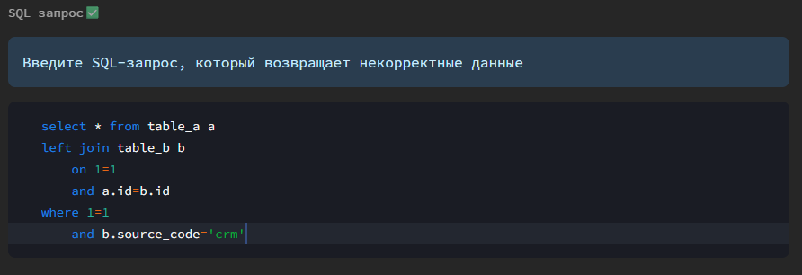

Работа с тестами
Готовые тесты
Готовые тесты представляют собой SQL-запросы, которые покрывают большую часть потребностей при проверке таблиц.
Для создания теста в разделе "Качество данных" во вкладке "Тесты" нажмите "Создать тест".
1️⃣ Выберите таблицу
2️⃣ Выберите столбцы и проверки над ними
Дополнительно можно выбирать тесты над всей таблицей, а не над конкретным столбцом.
3️⃣ Заполните параметры тестов
Для выбранных тестов заполните необходимые параметры
4️⃣ Сохраните с запуском теста или без запуска
Ручные тесты
Ручные тесты - кастомные тесты, которые пользователь задает с помощью своего SQL-запроса. SQL-запрос должен выводить строки с ошибками.
1️⃣ Выберите одну или несколько таблиц, к которым относится ваш тест
2️⃣ Укажите наименование теста Если тест с таким наименованием уже создан, вам будет выведено предупреждение, что в таком случае тест будет перезаписан.
Дополнительно вы можете задать описание теста.
3️⃣ Введите SQL-запрос 
4️⃣ Заполните параметры теста
5️⃣ Сохраните с запуском теста или без запуска
Изменение тестов
На текущий момент в Datapulse нет возможности редактировать ранее созданные тесты. Вы можете создать тест заново, и тогда старый тест будет перезаписан.
Типы готовых тестов
В то время как dbt имеет всего 4 готовых теста из коробки, Datapulse может предложить следующий широкий список готовых проверок:
| Тест | Описание |
|---|---|
| Не NULL | Значение столбца не должно быть NULL |
| Не равно | Значение столбца должно быть не равно указанному значению |
| Больше | Значение столбца должно быть больше указанного значения |
| Меньше | Значение столбца должно быть меньше указанного значения |
| Включает | Значение столбца должно содержать указанное значение |
| Не включает | Значение столбца не должно содержать указанное значение |
| Только буквы | Значение столбца должно содержать только буквы |
| Диапазон значений | Значение должно быть в указанном диапазоне (включительно) |
| Одно из значений | Значение столбца должно быть значением из списка |
| Тест | Описание |
|---|---|
| ФИО | Значение столбца должно соответствовать формату ФИО |
| Эл. почта | Значение столбца должно соответствовать формату электронной почты |
| Мобильный телефон | Значение столбца должно соответствовать формату номера мобильного телефона |
| Номер паспорта | Значение столбца должно соответствовать формату номера паспорта |
| ИНН | Значение столбца должно соответствовать формату ИНН |
| Тест | Описание |
|---|---|
| Кол-во между | Количество по столбцу в разрезе указанной даты должно быть между указанными значениями |
| Кол-во уникальных между | Уникальное количество (count distinct) по столбцу в разрезе указанной даты должно быть между указанными значениями |
| Персентиль по кол-ву | Количество по столбцу в разрезе указанной даты должно не превышать указанный персентиль |
| Персентиль по кол-ву уникальных | Уникальное количество (count distinct) по столбцу в разрезе указанной даты должно не превышать указанный персентиль |
| Сумма по дате между | Сумма по столбцу в разрезе указанной даты должна быть между указанными значениями |
| Сумма по дате персентиль | Сумма по столбцу в разрезе указанной даты должна не превышать указанный персентиль |
| Тест | Описание |
|---|---|
| Персентиль | Значение столбца не должно превышать указанный персентиль |
| Стандартное отклонение | Значение столбца не должно отличаться от стандартного отклонения больше, чем на указанный порядок |
| Тест | Описание |
|---|---|
| Уникальный | Значение столбца не должно дублироваться |
| Корректная ссылка | Значение столбца должно содержаться в указанном столбце другой таблицы |
| Больше столбца | Значение столбца больше значения другого столбца |
| Меньше столбца | Значение столбца меньше значения другого столбца |
| Тест | Описание |
|---|---|
| Отсутствуют данные | Нет разрезов по дате, у которых отсутствовали бы данные |
| Стандартное отклонение количества строк | Количество строк в разрезе даты не должно отличаться от стандартного отклонения больше, чем на указанный порядок |
Критичность теста
В Datapulse у теста можно определить его критичность:
- высокая
- средняя
- низкая
Критичность влияет на расчет балла качества данных - чем критичнее тест, тем сильнее на снижение балла качества данных влияет не выполнение теста и количество строк, которое тест не прошло.
Хранение ошибок
В Datapulse есть возможность сохранять в отдельную таблицу строки, которые не прошли проверку.
Перед этим необходимо в файле dbt_project.yml указать схему, в которой будут создаваться таблицы для хранения ошибок.
tests:
+schema: ваша_схема
Для сохранения ошибок при заполнении параметров теста включите параметр "Хранить ошибки". Также для большинства тестов вы можете выбрать, какие столбцы таблицы сохранять в таблицу с ошибочными строками (в том случае, если вы не хотите хранить все столбцы ошибочной строки для оптимизации памяти).
Ошибочные строки будут сохранены в таблицу - схема_для_тестов.таблица_столбец_имятеста. Наименование таблицы вы всегда можете посмотреть в карточке теста.
Инкрементальное тестирование
Проверяемые таблицы могут содержать большое количество данных, что может сильно сказываться на времени выполнения теста. Также, если данные только записываются и не изменяются (как в большинстве случаев у DWH витрин), каждый раз проверять таблицу целиком может быть неоптимальным решением.
Для этого в Datapulse есть возможность инкрементального тестирования. Для этого укажите столбец инкремента (обычно это столбец даты: дата записи строки в таблицу) и в таком случае проверяться будут только последние записи - строки с наибольшим значением в выбранном столбце инкремента.
where load_dttm = (select max(load_dttm) from "schema"."table")
У некоторых тестов (особенно, которые связаны со статистикой: персентиль и стандартное отклонение) было бы некорректно брать только последние записи, так как это напрямую бы влияло на полученное статистическое значение и на результат теста в целом. Для этого в Datapulse предусмотрена возможность тестирования в рамках окна - тестирование данных, которые входят в последнее окно (N дней/месяцев/кварталов/лет).
where load_dttm >= (select max(load_dttm) from "schema"."table") - (2|| ' month')::interval
Карточка теста
В карточке теста отображает основная информация о нем, а также собранная статистика: календарь с результатами выполнения и статистика по строкам с ошибками
Просмотр SQL-теста
В карточке теста можно посмотреть его SQL, нажав кнопку "Получить SQL-теста".
Наименование готовых тестов
Готовые тесты от Datapulse автоматически сохраняются в папке проекта dbt и имеют префикс dpulse_.
Важно
Редактирование этих файлов может повлиять на работоспособность и появление критических ошибок.